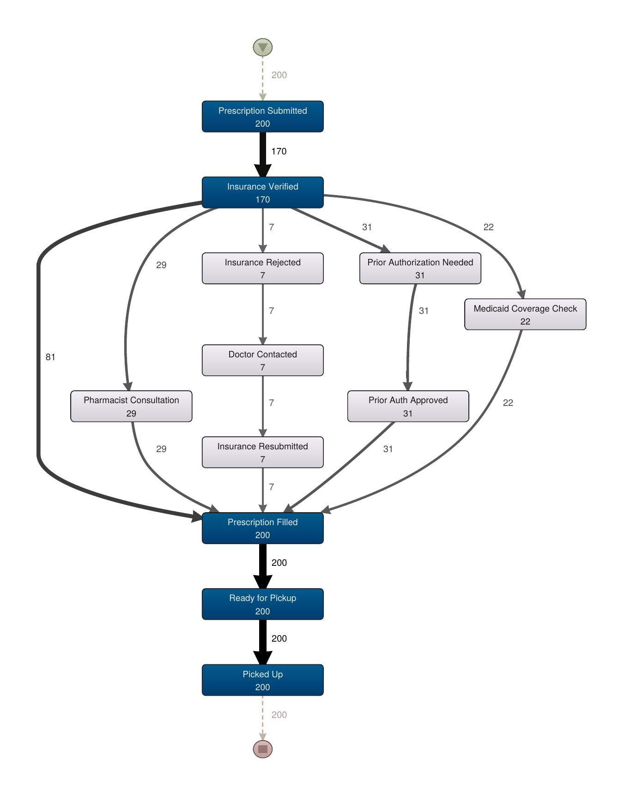
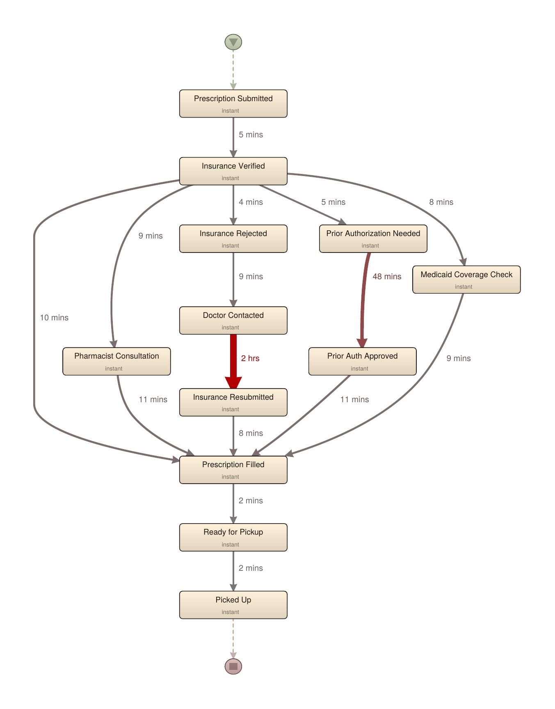

A process-mining analysis of retail pharmacy fulfillment — where the bottleneck actually forms, and what closes the gap between "filled" and "picked up."
What happens between a prescription being sent and a customer walking out with it — and where that flow breaks down under real conditions.
A prescription enters the pharmacy one of two ways — sent electronically by a doctor's office, or dropped off in person. From there it moves through a short, familiar sequence:
On paper, that's four short steps. In practice, "Insurance Verified" is a fork in the road, not a single step — it can branch into a prior authorization request, a Medicaid coverage check, a pharmacist consultation, or a rejected claim that has to be resubmitted after a call to the doctor's office. Self-pay customers skip verification entirely. Each branch adds real, compounding time before the prescription can be filled at all.
Every one of those branching steps — verification, consultation, prior auth, rejection handling — routes through the same single pharmacist. Techs can handle intake and pickup, but only a licensed pharmacist can verify coverage, approve a prior authorization, or consult with a patient.
This is a classic single-resource bottleneck: demand for the pharmacist's time is far more variable than demand for the tech's time, but capacity for both is fixed. The result isn't a slow process — it's a fast process with an overloaded gatekeeper.
We modeled 200 synthetic prescriptions moving through this flow over a simulated month, with a single shared pharmacist resource, real insurance-type branching, and queueing built in — then mined the resulting event log in Disco.
The frequency map below shows every path a prescription can take. Most (85%) follow one of the faster branches. But five distinct exception paths exist — and each one routes back through the pharmacist before a prescription can be filled.

Re-coloring the same map by median duration per case — rather than raw case count — makes the actual time cost of each branch visible for the first time.

Two findings stand out once queueing is modeled properly:
The queueing effect concentrates at predictable hours — late morning, early afternoon, and especially 6 PM, when evening pickups and new drop-offs collide. This matches a common real-world complaint: a prescription submitted mid-afternoon isn't ready until hours later, even though no single step in the process takes more than a few minutes on its own. The delay isn't in any one task — it's in how many tasks are waiting for the same person.
Three changes that target where the delay actually forms — without asking the pharmacist to do more, faster.
Roughly 45% of the delay traces back to insurance verification branching — prior auth, rejection, Medicaid checks. For a customer with the pharmacy listed as their primary provider, coverage status rarely changes visit to visit. Pre-validating on file removes an entire branch from the flow for repeat customers, the same way standardizing proposal templates reduces variability in a services process.
Logging an already-approved prior authorization doesn't require a pharmacist's clinical judgment — only their signature or system entry. Letting a trained tech handle that logging step, with the pharmacist reviewing exceptions only, directly targets the 48-minute bottleneck without touching headcount.
A status tracker that reflects actual queue position — not just "in progress" — turns an invisible wait into a predictable one. Paired with a pickup notification that only fires once a prescription is truly ready, this doesn't shrink the bottleneck, but it removes the second-order cost: wasted trips and repeat phone calls that add even more load to the same overloaded pharmacist.
None of these fixes require new headcount — they require re-routing work away from the one resource every path depends on. That's a pattern, not a one-pharmacy fix: any workflow automation tool that pre-validates routine cases and surfaces real queue status could sell into pharmacy chains the same way, turning a single-location process fix into a platform pitch.